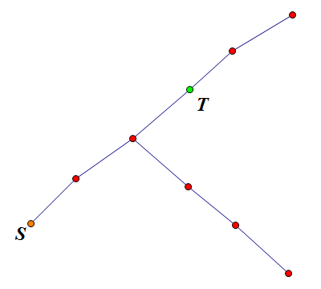

一张地图上标记了 $n$ 个从 $1$ 到 $n$ 标号的驿站，$n − 1$ 条长度为 $1$ 里的小道，每条小道双向连接两个不同的驿站，并且驿站之间可以通过小道两两可达。
每个驿站都可以驻扎一个小队，每个小队可以控制距离不超过 $k$ 里的驿站。如果有驿站没被控制，就容易产生危险——因此这种情况应该完全避免。而那封丢失的密信里，就装着朝廷数学重臣留下的精妙的排布方案，也就是用了最少的小队来控制所有驿站。
scx 知道，如果能计算出最优方案的话，也许她就能够将功赎过，免于死罪。她找到了你，你能帮帮她吗？当然，scx 等待你的支援的过程中，也许已经从图上观察出了一些可能会比较有用的性质，她会通过一种特殊的方式告诉你。
第一行包含三个整数 $n, k, t$ ($1 \leq n \leq 10^5, 0 \leq k \leq 20$)，分别代表驿站数，一支小队能够控制的最远距离，以及特殊性质所代表的编号。
接下来的 $n - 1$ 行，每行两个正整数 $u_i, v_i$，表示在 $u_i$ 和 $v_i$ 之间，有一条长度为 $1$ 里的小道。
输出一行一个整数，为最优方案下需要的小队数。
如果 $k = 0$，那么直接输出 $n$ 即可…… (然而数据似乎有问题？)
如果 $k = 1$，那么就是经典的最小支配集问题，可以使用贪心或 DP 解决。
不过当 $k$ 比较大时，DP 的第二维状态数是呈指数级增长的，所以 $k = 20$ 显然不能 DP。
考虑贪心算法，当 $k = 1$ 时，可以按照 dfs() 的反序、bfs() 的反序或等等处理均可。
$k > 1$ 时，不能任意地处理，否则会有这种情况发生 ($k = 3$)：

$T$ 是 $S$ 的 $3$ 阶祖先，但是 $T$ 不能覆盖所有点，而 $S$ 的 $2$ 阶祖先 ($T$ 的子节点) 却可以覆盖所有点。
所以，我们应该从深度考虑，考虑最深的 (未覆盖的) 点，可以看出，它的最优方案一定是用它的 $k$ 阶祖先覆盖。因为它的低阶祖先或兄弟能覆盖的点都能被 $k$ 阶祖先覆盖。
因此，可以使用 bfs() 的反序，每次寻找第一个未覆盖的点，将它的 $k$ 阶祖先加入集合，由于 $k$ 不大，因此暴力将距离不超过 $k$ 的点覆盖，这样做下去，答案一定是正确的，时间复杂度 $O(nk)$。(然而数据似乎有问题？)
#include <bits/stdc++.h>
#define maxV 100034
#define maxE 256101
using namespace std;
int V, E, D, ans;
int u, v, i, j;
int to[maxE], first[maxV], next[maxE];
int que[maxV], p[maxV], dep[maxV], quec[maxV];
int covered[maxV];
inline void addedge(int u, int v){
to[++E] = v; next[E] = first[u]; first[u] = E;
to[++E] = u; next[E] = first[v]; first[v] = E;
}
inline void down(int &x, const int y) {x > y ? x = y : 0;}
void bfs(int root){
int h = 0, t = 1, i, x, y;
dep[root] = 0;
que[1] = root;
for(; h < t; )
for(i = first[x = que[++h]]; i; i = next[i])
if((y = to[i]) != p[x]){
p[y] = x;
dep[y] = dep[x] + 1;
que[++t] = y;
}
}
void cover(int node){
int h, t = 1, i, x, y;
dep[node] = 0;
covered[node] = ans;
quec[0] = node;
for(h = 0; h < t; ++h){
x = quec[h];
if(dep[x] >= D) return;
for(i = first[x]; i; i = next[i]){
if(covered[y = to[i]] != ans){
covered[y] = ans;
dep[y] = dep[x] + 1;
quec[t++] = y;
}
}
}
}
int main(){
scanf("%d%d%*d", &V, &D);
for(i = 1; i < V; ++i){
scanf("%d%d", &u, &v);
addedge(u, v);
}
if(!D) return printf("%d\n", V), 0;
dep[1] = 1; bfs(1); ans = 0;
memset(covered, 0, sizeof covered);
for(i = V; i; --i)
if(!covered[v = que[i]]){
for(j = D; j && v > 1; --j) v = p[v];
++ans; cover(v);
}
printf("%d\n", ans);
return 0;
}
坑1：暴力覆盖的那个 dfs 中，记录访问不能直接用原来的数组，因为可能一个未覆盖的点的 $k$ 阶祖先已经被某个点覆盖到，应该另开一个数组记录或者将原来的数组进行最新覆盖编号 (类似于那种减少 memset() 的技巧)。